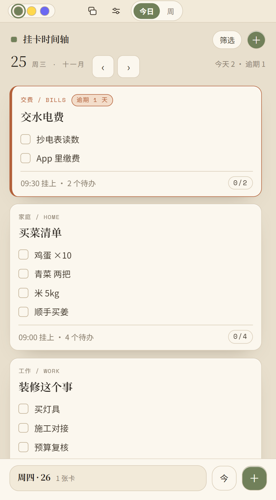
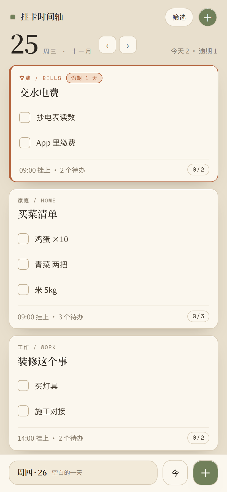
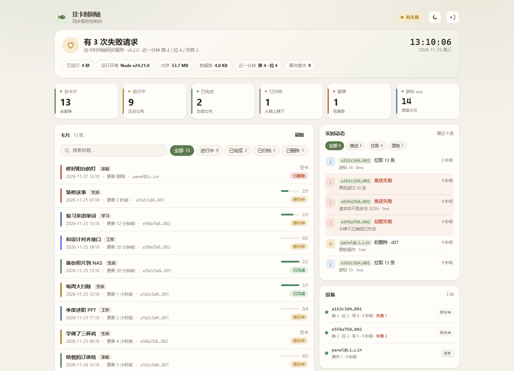

把要做的事，
挂在时间上
不是又一个往下滚滚滚的待办列表。每张卡挂在「某一天」这条线上，一眼看清今天该做什么、哪张已经逾期； 卡片里再拆几条子待办，勾到哪儿一目了然。桌面端 + 手机端 + 一个可自托管的同步服务器，数据始终是自己的。
同一份组件，三套视觉语言
右上角切一下皮肤，页面和截图会一起换 —— 桌面端、手机端、服务器控制台都是同一套。


为「今天该做什么」而做
不加协作、不加看板、不加甘特图。只把时间轴这件事做顺手。
卡片挂在时间上
一天一列，逾期自动标橙并前置。竖屏是「今日」，窗口拉宽自动变成「周视图」。
离线优先
断网照常挂卡、打勾，改动进待推送队列，联网自动补推。拉取按游标增量，不整表同步。
数据归自己
同步服务器是 200 KB 的零依赖单文件，一条 node 命令就能跑；数据存在一个 SQLite 文件里。
全库搜索
标题、分类、还有条目内容都能搜到；命中的那一条会单独标出来，旧卡也翻得出来。
备份随手带走
桌面端一键导出 JSON（刻意不含令牌），导入按 id 合并，误清空也能从备份恢复。
手机端也很顺手
下拉即同步、硬件返回键先关抽屉、44px 触控目标、安全区适配，抽屉底部一行按钮不再被挤爆。
一台小机器，三端就同步了
服务器没有任何外部依赖：把单文件丢上去，用 systemd 托管，绑 127.0.0.1，公网走隧道或反代。
离线优先 + 操作日志 + 最后写入者胜：先比 updatedAt，相同再比 deviceId 字典序，
三端跑的是同一个 isNewer()，不会来回震荡。卡片永远软删除，删掉的卡不会在别的设备上「复活」。
# 1) 拿一个令牌
TIMECARD_TOKEN=$(node -e "console.log(require('crypto').randomBytes(32).toString('base64url'))")
# 2) 跑起来（需要 Node ≥ 22.5）
TIMECARD_TOKEN=$TIMECARD_TOKEN node Timecard-0.1.4-server.mjs
# 3) 控制台 http://127.0.0.1:8787/
# 两端「设置 → 同步」里填地址 + 令牌就通了
服务器自带 Web 控制台：运行状态、实时同步动态、设备列表、卡片浏览、软删除 / 恢复、导出备份。 详见 使用说明。

下载
最新版本 v0.1.4，全部产物都在 GitHub Releases；历史版本也在那儿。
校验：setup.exe a4d250bd…3127b · apk dd64d9b0…9db5c · server.mjs a6e0cb03…94209
Windows 包未做代码签名，首次运行会被 SmartScreen 拦一下（更多信息 → 仍要运行）；
Android 包用正式密钥签名，若小米提示「解析包错误 33」，请到「文件管理 → 下载」里点安装，别用浏览器下载面板直接打开。
几个常问的
一定要 服务器 才能用吗？
不。桌面端和手机端都能离线单机用；同步只是让两台设备看到同一份数据。想要同步再起服务器，30 秒能跑起来。
和滴答清单 / Todoist 有什么不一样？
它们组织的是「清单」，这里组织的是「时间」。没有协作、没有提醒风暴、没有账号体系，数据存在你自己的机器上，MIT 开源，随便改。
两端同时改同一张卡会怎样？
整卡覆盖：updatedAt 更新的一份赢，相同则按 deviceId 字典序。冲突不会被静默丢弃，控制台里能看到每一张卡的 rev 和最后写入设备。
数据放在哪？换电脑怎么办？
桌面端在 %APPDATA%\Timecard\timecard.json，设置里可以导出 JSON 备份再导入新机器；服务器就是那个 SQLite 文件，停服务拷走即可。手机端卸载会清本地数据，重要内容建议靠同步或桌面端备份。